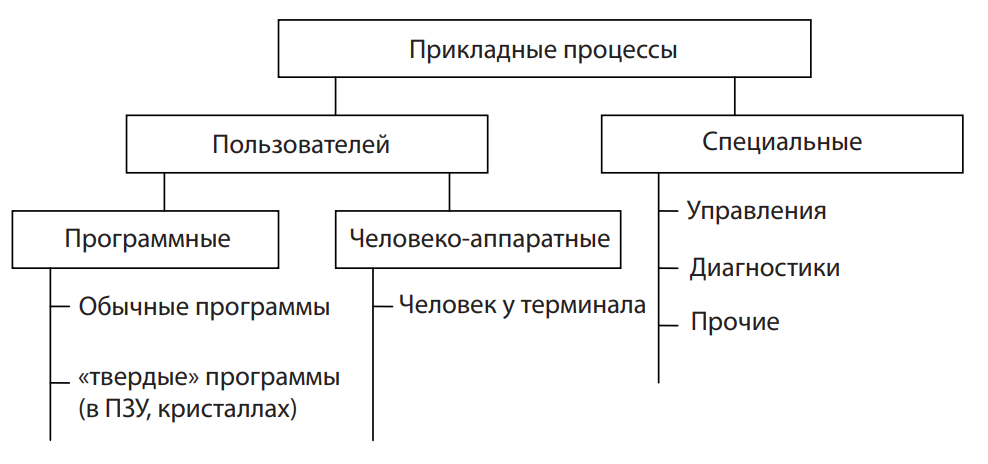
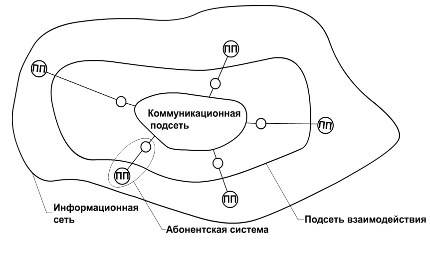

Структура информационной сети Любая информационно-вычислительная система создается для выполнения ею прикладных задач пользователей. Первые компьютеры были автономными устройствами, работали отдельно, независимо от других. Для решения множества практических задач требовалось организовать информационное взаимодействие между ними. Необходимо было найти решение, которое бы удовлетворяло трем перечисленным ниже требованиям, а именно: а) устраняло дублирование оборудования и ресурсов; б) обеспечивало эффективный обмен данными между устройствами в реальном времени; в) снимало проблему управления соединениями. Было найдено два решения, выполняющих поставленные условия, – локальные и глобальные сети. Локальные сети служат для объединения рабочих станций, периферии, терминалов и других устройств. Локальная сеть позволяет повысить эффективность работы компьютеров за счет совместного использования ими общих ресурсов, например файл-серверов с базами данных, принтеров. Характерными особенностями локальной сети являются: • ограниченные географические пределы; • обеспечение многим пользователям доступа к общим ресурсам и обмена информацией между собой по каналам с высокой пропускной способностью; • постоянное подключение к локальным сервисам; • физическое соединение рядом стоящих устройств. Быстрое распространение компьютеров привело к увеличению числа локальных сетей. Они появились в каждом отделе и учреждении. В то же время каждая локальная сеть – это отдельный электронный остров, возможно, работающая по своим правилам и не имеющая связи с другими себе подобными. Стало очевидным, что использования технологии локальных сетей уже недостаточно. Требовалось найти способ передачи информации от одной локальной сети к другой. Решить эту задачу помогло создание глобальных сетей. Глобальные сети служат для объединения локальных сетей и обеспечивают связь между компьютерами, находящимися в локаль- 4 ных сетях. Глобальные сети охватывают значительные географические пространства и дают возможность связать устройства, расположенные на большом удалении друг от друга. При подключении локальных сетей, отдельных компьютеров и других устройств к глобальным сетям возникает возможность совместного использования информации и ресурсов, а также доступа к сети Internet. При выполнении различных прикладных задач пользователей в распределённых информационных системах выполняется множество прикладных процессов
Рис. 1. Виды прикладных процессов Все системы, входящие в состав информационной сети, в зависимости от решаемых ими задач можно разделить на 3 класса: – абонентские – выполняют прикладные процессы для нужд пользователей; – административные – управляют процессами взаимодействия абонентских систем; – ассоциативные – совместно с каналами передачи данных обеспечивают прокладку трактов, соединяющих прикладные процессы пользователей в различных абонентских системах. Информационная сеть является совокупностью абонентских систем, взаимодействующих друг с другом через коммуникационную подсеть, которая включает в себя физическую среду, передающие сигналы, а также программные и технические средства, обеспечивающие передачу блоков информации по адресам их назначения. 5 Информационная сеть по функциональным признакам состоит из 3 частей, входящих одна в другую (рис. 2): – коммуникационная подсеть – обеспечивает взаимодействие абонентских систем без учета информации об их местонахождении и расстояниях между ними; – подсеть взаимодействия – обеспечивает взаимодействие прикладных процессов (ПП) независимо от того, в каких системах они расположены и где эти системы находятся; – информационная сеть – включает подсеть взаимодействия и прикладные процессы пользователей.
Рис. 2. Структура информационной сети Современный подход к построению информационных сетей заключается в частичном выполнении функций области взаимодействия в специальных ассоциативных устройствах, например маршрутизаторах.